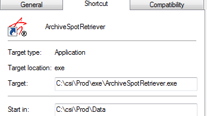

Archive
The Counterpoint Archive program gathers data prior to a defined date, removes it from the database, and places it in an archive folder. The Archive program can be generated manually or set up to run automatically.
The date as of which data will be archived or purged is determined by subtracting the number of months to retain (defined in the Traffic Site Option screen) from the last standard month billed date.
All Traffic and Affiliate Spot information including contract information, copy rotations, and posted status is purged and archived (for records prior to the archive date). This information can be viewed on the archive files using Microsoft Excel.
The following records are also purged (and not archived): Affiliate Agreements, Programming, Proposals, Projections, Blackouts, Advertisers/Agencies, Rate Cards, Research, Salespeople, Vehicles, Export Journal records, and Report Queue records, using the criteria listed below:
- Advertisers: if not used by contracts, receivables, or history for two months from the current date
- Agencies: if not used by contracts, receivables, or history for two months from the current date
- Rate Cards: if the rate card year is older than the current year minus one year (for example, if the current year is 2018, any unused rate card older than 2017 is removed)
- Research: the cutoff date for research books is determined by the Site Options setting "Retain expired contracts for X broadcast months from end of last invoicing", along with the research book date. When the archive is run, the contracts are processed before the research books are processed, and after doing that, if there's now a research book that no contract currently in the system is referencing, and that has a book date prior to the cutoff date, and that is not being used as a population source for any research book currently in the system, then the research book will be purged. On the other hand, if that research book was being used as a population source by a current research book, even if the book date (of the research book that is being used as a population source) is prior to the cutoff date, it will not be purged, since it's still being used as a population source.
- Salesperson: if marked as dormant
- Vehicles: if marked as dormant
- Export Journal: Any records older than the cutoff date for the removal of affiliate spots
- Report Queue: Any records older than one day in the past
Setup
Create a history folder in which to store the archived data.
The folder can be located in:
- CSI\Prod\History or
- Anywhere on the server not under CSI (verify read/write rights) or
- On a different server from CSI (verify read/write rights)
Due to the file sizes, the last two options are recommended.
Edit Traffic.ini
Add Archive = csi\prod\history (location of history folder) to the Traffic.ini.
Site Options -> General Tab
There are six questions that allow you to control the period to archive.
- Archiving is based on the last standard broadcast invoice date
- Entering a number of months of 500 or larger results in bypassing that archive
- The amount of months to retain each of the items can be different
- If the values are different, the following rules are followed:
- Traffic Spots cannot be deleted if Affiliate spots exist
- Contracts cannot be deleted if Projections exits
- Expired Contracts cannot be deleted if Spots exist
- Retaining Dead and Expired Contracts are independent from the other questions
Automatic Setup
Edit CSI_Server.ini
The CSI_Server.ini file contains the settings that determine when the Archive is automatically run. To edit these settings, browse to the CSI\Prod\Exe folder and open the CSI_Server.ini file, and locate/create the section [Archive].
The Start In Folder must be referencing the location of a traffic.ini that will work on the server (i.e. map drive defined or the server drive letters defined).
[Archive]
Enabled = 1
WeekDays = 1111111
Interval = 86400
StartTime = 10:00PM
MonthDaysToRun = 10
WeekNumber = 3
TimeSlot =
Exe = x\csi\Prod\Exe\Archive.exe
StartInFolder = CSI\Prod\data (database name)
CommandLine = \NoDLL
KeepProgramRunning = 1
CSI_Server.ini Section Descriptions
Enabled
Is used to turn a task on or off. Value 0 = disabled, 1 = enabled. Set this to 1 for this feature to automatically run.
WeekDays
Allows a specific week day to be selected. Week days are defined using seven 1’s and 0’s (0 = disabled, 1 = enabled). Example: WeekDays = 1111100. This turns Sat and Sun off.
Interval
Interval defines the next time the application is to be run. For example, if the start time is set to 2pm, and the interval is set to 86400 seconds (the number of seconds in a 24 hour period), then this application will be started every day at 2pm. If the interval is set to 3600, the application will start at 2pm and then be started every hour after that.
StartTime
This is the time of day to start the application. The time can be entered in several different formats (h:m:ss, H, hh:mm, etc).
MonthDaysToRun
This can be used to specify a specific day or days on which to run the archive. Valid ranges are 1-31. Any values outside of this range will be considered as all days being specified. For instance, zero or blank turns this setting off and the task will be run on all days.
Example: MonthDaysToRun = 1, 15, 30
WeekNumber
This can be used to specify the broadcast week in which to run the archive.
Example: WeekNumber = 52
NOTE: When this setting is used, WeekDays would normally only have one day turned on. For example, if WeekNumber is set to 2, then WeekDays would be set as 0000001, which would run the task in the second broadcast week on Sunday only.
TimeSlot
This is used to specify that a task is only to be run between certain hours. Leaving this setting blank = All times on.
Example: TimeSlot = 6am, 6pm
Exe
This must be the location of the CSIArchive.EXE
Example: Exe = C:\CSI\Prod\Exe\CSIArchive.exe
StartInFolder
This must be the location of the database.
Example: StartInFolder = x:\CSI\Prod\data
CommandLine
This setting gets passed to the task as a command line entry.
Example: CommandLine = /NoDLL
KeepProgramRunning
This setting should be set to 0.
Manual Setup
Manual mode is used when initially setting up data archive for clients who have never archived their database.
Create a shortcut with the Target pointing to CSI\Prod\EXE\CsiArchive.Exe, and the Start in pointing to the Traffic.ini, typically CSI\Prod\Data.
Add /NoDLL to the Target (see example below).
Adding /UserInput to the Target will allow you to see a date verification screen prior to archiving. This is recommended, especially for the first archive.
Running the Archive Utility
All users should be off the system during the archive process, to block users from the system during this process, see IT Utilities.
A backup of the database is created as part of the Archive before any file is archived. CSI_Server must be running during the Archiving process to create the backup.
Automatic Archive
The archive will automatically run based on the settings in the CSI_Server.INI. You can verify the status of the archive by looking at the csiarchive.txt, located in the CSI\Prod\Data\Messages folder.
Manual Archive
To run the Archive manually, double click on the CSI Archive icon. Depending upon your setup, you may see a date verification screen. When the screen first appears the dates will be blank while the system researches the proper dates to archive based on the Site Option values. Once determined, they will be displayed. Throughout the archiving process, this screen will display a progress bar.
If you are running a manual archive, a progress bar is shown on the archive screen.
File Rebuild
After the first archive is complete, you must perform a Pervasive File Rebuild. This will ensure the files will remain approximately the same size thereafter, as roughly the same number of records will be archived and added each month.
The Pervasive Rebuild will:
- Speed up the system
- Shrink the size of the database
- When data is deleted in a Pervasive database, it is not removed, but hidden. Rebuilding the file(s) copies only the active records to a new location
Rebuild Procedures
- Backup of the database
- Create a sub-folder of data called Rebuild (CSI\Prod\Data\Rebuild)
- If a rebuild folder is already defined, delete any contents within the folder before proceeding
- Initiate Rebuild
- Start -> All Programs -> Pervasive-> SQL 11 -> Utilities -> Rebuild
- Once you select Rebuild, the following screen will appear, click Next.
- Click Add.
- Browse to CSI\Prod\Data
- Select all BTR and MKD (if using the Affiliate System) files and click Open.
- Do this by sorting the files by type. Select the first file: ADF, scroll to the last file and hold the Shift Key down and select the last BTR/MKD file
- Selected all files to Rebuild and click Next.
- Set the values in options
- Choose “Add/Replace System Data and Key” option.
- Browse the Output Path field to point to the Rebuild folder you previously created.
- Change the Log File path to go to the Rebuild folder if you want to easily view the output log.
- Click Next to initiate the Rebuild
- Each file will be listed as it is rebuilt
- Completed Rebuild. Once the Rebuild is completed you should see the rebuild screen with the message, “The files were built successfully”
- Click Finish to exit
- Select and copy ALL rebuilt data (BTR and MKD) files from your CSI\Prod\Rebuild folder and paste them into your CSI\Prod\Data folder
Archive Output
Archive Verification
Two log files are created and stored in the CSI\Prod\Data\Messages folder: “csiArchive” and “csiArchiveRemovalDetail”.
The csiarchive.txt will show:
- When the archive started
- The method (manual or automatic)
- The archived date range
- The number of affiliate spots, log spots, contract spots, affiliate agreements, copy rotations, etc., archived for each month
- The number of research books, vehicles, unused advertisers, etc., purged
- The date and time it was completed
Archive File Information
Each archived month is stored in its own folder, with the name Archive, year, month, and last day of broadcast month.
Within each month’s folder are two to three Excel files, depending on whether you use the Affiliate System: Affiliate Spots, Copy Rotations, and Traffic Spots.
Output Examples
The information from each system field is stored in its own Excel column, and can easily be sorted and edited. As Counterpoint develops new data fields, those fields are added to the archive utility, and placed to the right of the last current column, ensuring that the previous data fields will continue to line up with prior archived records.
Traffic Spots
All contract, copy, and scheduling information is included for each spot.
Copy Rotation
All copy and rotation information is archived.
Affiliate Spots
All information associated with each spot is archived, including its contract information, its copy, its fed and pledged times, and its posted information.
Retrieving Data
All archived data is saved as an Excel (xls) spreadsheet. To retrieve agency requested data, such as an aired affidavit for post buy analysis, open the spreadsheet and sort the data to achieve the desired information.
Affidavit Retrieval
For example, Geico requests an aired analysis of their campaign in November of 2011.
- Locate the file
- Open the AffSpots file. Some of the columns might be blank, and/or contain non-relevant information.
- Highlight and delete any unwanted columns.
- Once you have your desired columns, you can sort by Advertiser/Contract to locate the needed information, and delete all unneeded lines.
- You can rearrange the order of the columns by clicking in the header column and cutting and pasting the information, to provide the data to your agency in their requested format.
You can follow these steps to view any Traffic spot or copy information.
Archive Retrieval Utility
The Archive Retrieval utility extracts and places archived data for a single advertiser within a requested aired date span into a CSV file.
Setup
Traffic INI
The utility looks at the Traffic INI to find the location of the archived data. Make sure that your INI contains the Archive path. Example: Archive = c:\csi\prod\archive
Shortcut
To run the utility, create a shortcut to the ArchiveSpotRetriever.EXE, located in the CSI\Prod\EXE folder.

Point the Target to the ArchiveSpotRetriever.EXE, and the Start In to the folder in which the Traffic/Affiliate.ini resides (typically, CSI\Prod\Data).
Running the Utility
Double click the shortcut.
- Enter the date range you wish to retrieve
- This is the Start Aired Date and End Aired date
- There is no limit to the amount of data the utility can process, however Excel has a limitation as to how many lines of data can be produced (one million rows). Therefore, if you have an advertiser with a very large number of spots (one that would generate more than one million rows), request the number of weeks in batches, rather than all at once.
- Select one advertiser at a time
- The utility will save the CSV file in the CSI\Prod\export folder, unless the Browse button is used to manually save the file to another folder
- Click Start.
The utility will look in each archive file that contains spots from the requested date span and pull information for that advertiser. The utilities progress and file results are displayed in the Total Records Scanned and Total Records Found fields.
Output
The utility will gather the desired data and place it in a CSV file called, Advertiser Name_Start Date_End Date.CSV. Example: Coca-Cola._1-5-15_1-11-15.CSV
Example File